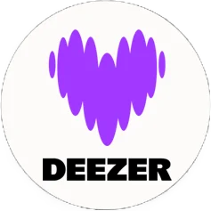
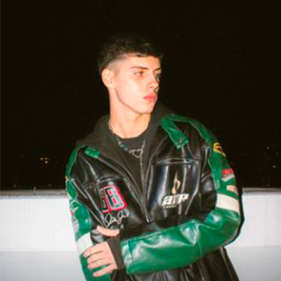

AMES
H0m3
Mus1c
T0urs
V1d3os
F4nd0m
J4me's f4ndom
S3guilo en tod4s p4rtes

Full f4n m0d3 0n
insta-pics

Ir a Inst4gram
Suscribite al full fandom
Recibí toda la datita y los pre-saves de los próximos releases, antes que nadie.
Email
Suscripción a
Todo
Música
Tours
Videos
Suscribirme